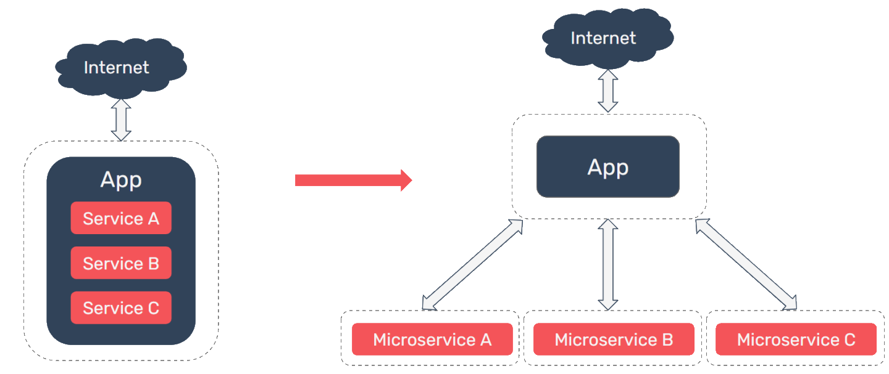
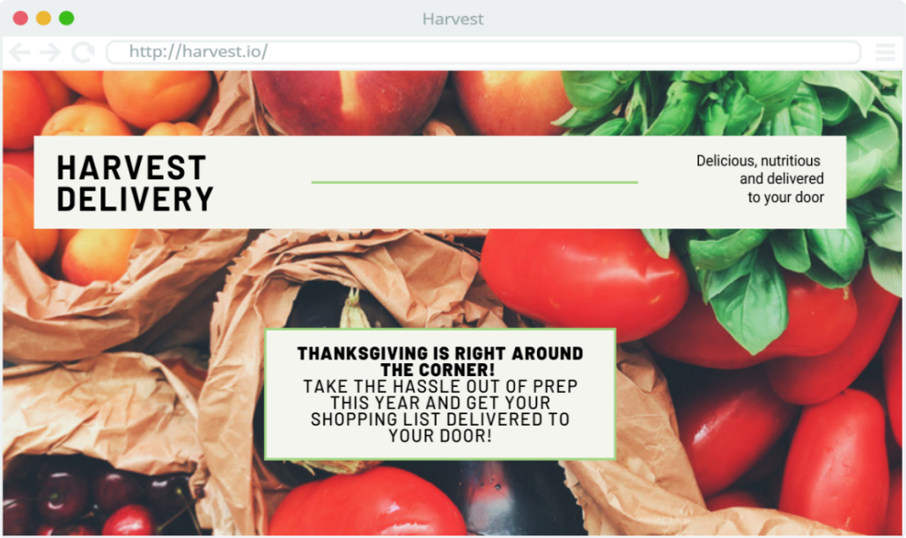

1. Introduction & Use Case
Pioneer is a feature management service built to handle an organization’s migration from a monolithic architecture to a microservices architecture.
As an application grows and demands on the system increase, an organization may find that they need to begin scaling their application. A monolithic architecture may naturally lead to tightly coupled code that is difficult to scale. Conversely, a microservices architecture is more loosely coupled and can be independently scaled & deployed. A small team can also organize a microservices architecture around business capabilities.
When transitioning from a monolith to a microservices-oriented architecture, an organization may initially want to expose the new service to a small number of users while it collects analytics and user feedback, and analyze how the service performs under various loads. By using feature flags with Pioneer to handle this transition, any change can be quickly rolled back in real-time simply by toggling the flag off; no redeployment is necessary.
1.1 Hypothetical
To better understand this use case, we can consider a hypothetical situation involving a company, Harvest Delivery; we can use this hypothetical scenario to illustrate what the catalysts for a conversion from a monolith to microservices might be for a small team, to consider the challenges that this organization will be facing before undertaking such a project, and to examine some of the potential options that are available in this space.
Harvest Delivery is a regional shopping service that allows users to order groceries online. A locally-contracted shopper purchases the requested groceries and delivers them to the doorstep of the user. Harvest Delivery’s web application receives a variable amount of user traffic, with peak traffic occurring in the days leading up to major holidays.
The architecture of Harvest Delivery’s web application is currently a monolith. As the organization grows, the monolithic architecture begins to cause a strain on the engineering team. One such strain is that the team has become reluctant to add new features to the monolithic codebase. Currently, different components of the code are highly dependent on one another and changing one component means an engineer also has to update multiple other components, increasing their workload. This issue also makes the codebase difficult to maintain, as fixing one bug has the tendency to introduce new problems.
Another issue the team has encountered is the inability to scale each business component (like payment processors or catalog) of their architecture independently. The team has found that during periods of high traffic, users are experiencing long delays during the payment stage. Harvest Delivery would like to scale the payment processing component independently from the rest of the codebase, but this isn’t possible with the current monolith. If the code responsible for payments was abstracted into a microservice, not only would this enable independent scaling, it would also cultivate a team solely dedicated to this payment service. The payment team could carry out their development and deployment pipeline independently to the rest of the monolith, resulting in faster improvements to payment processing.
The final issue the Harvest Delivery team is encountering with their monolith pertains to availability. Currently, if a bug triggers an outage, then the entire application becomes unavailable. The team would like to ensure that even if one component of the application is unavailable, for example creating a new user account, users not using the affected component can still perform their desired actions.
In response to these issues, the CTO has decided that they should migrate the application code towards a microservices architecture. The CTO has instructed the team to develop a system architecture organized around Harvest Delivery’s business concerns, with the shopping catalog, payment processing, and shopper communication all abstracted into individual microservices.
Modifying the system architecture of Harvest Delivery is a significant undertaking; additionally, it’s important to avoid any impact on user experience. The holidays are coming up and Harvest Delivery does not want to lose any customers to system outages.
Harvest Delivery plans to collect analytics and perform load testing on the new services to ensure that they can handle the load of holiday shopping sprees. They also plan to solicit user feedback from a percentage of users before rolling these new services out to the entire customer base.